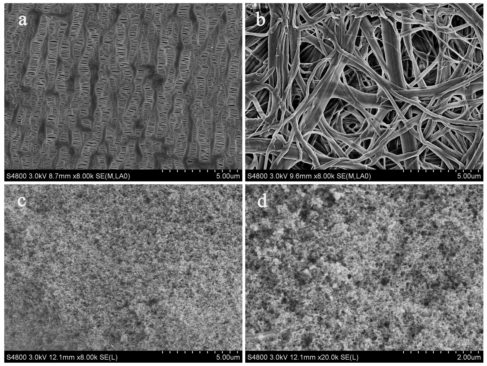
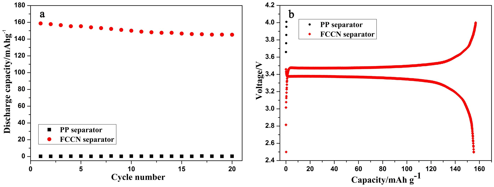

Schematic illustration for the preparation process of FCCN separator. (We appreciated Chuanjian Zhang for his contribution in designing and drawing Figure 1).
Figure 1

Typical SEM micrographs of (a) PP separator (×8000), (b) CN separator (×8000), (c) FCCN separator (×8000) and (d) FCCN separator (×20000).
Figure 2
Contact angle images between the separators and liquid electrolyte.
Figure 3
(a) DSC curves of PP separator and FCCN separator, (b) Thermal shrinkage rate of PP separator and FCCN separator over a temperature range from 100°C to 150°C, and the inset is the photograph of PP separator and FCCN separator after thermal treatment at 150°C for 0.5 h, (c) Contact test between hot electric iron tip and separators, (d) Combustion behavior of PP separator and FCCN separator.
Figure 4
(a) Rate capability and (b) cycling stability of the LiCoO 2/graphite cells using PP separator and FCCN separator. Nyquist plots for the LiCoO 2/graphite cells using PP separator and FCCN separator measured (c) after the first cycle and (d) after the 200 cycles test.
Figure 5

(a) Cycle performance and (b) charge/discharge curves for LiFePO 4/Li cells using PP separator and FCCN separator at 120°C.